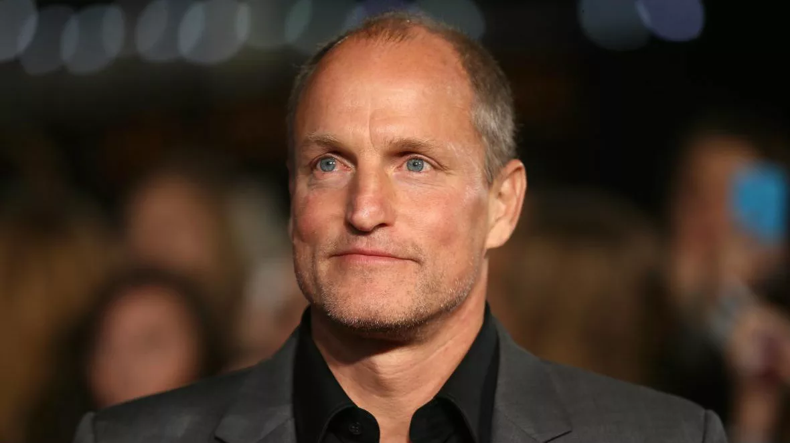

Голодные игры:
Сойка-пересмешница. Часть I
The Hunger Games: Mockingjay – Part 1
Сюжет
После событий Квартальной бойни Китнисс Эвердин оказывается в Дистрикте 13, который, как считалось ранее, был уничтожен. На самом деле дистрикт выжил и теперь готовится к полномасштабной войне против Капитолия. Под руководством президента Альмы Койн повстанцы пытаются использовать Китнисс как символ революции — «Сойку-пересмешницу».
Китнисс, сломленная потерей Пита, который остался в плену у Капитолия, с трудом соглашается на роль символа. Ей предстоит сниматься в пропагандистских роликах, которые должны поднять боевой дух дистриктов. В это же время её друг Гейл и команда повстанцев отправляются на опасные миссии, а Капитолий в ответ усиливает репрессии.
В финале Китнисс узнаёт, что Пит жив, но его подвергли пыткам и промыванию мозгов. Фильм заканчивается на моменте, когда Китнисс понимает, что настоящая война только начинается, а ей предстоит сделать выбор между личным счастьем и долгом перед Панемом.
Режиссёр
Актёрский состав


